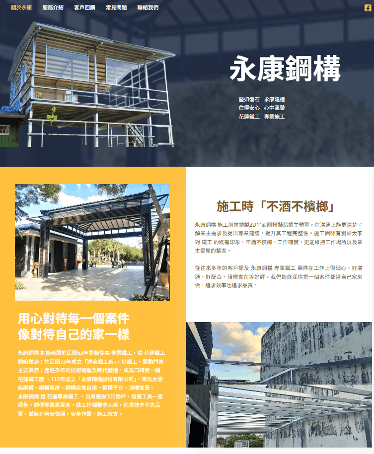

About / 01 · identity
Aisha
Pearl.
Information technology & management
Tzu Chi University
I build at the intersection of visual communication, practical engineering, and curiosity.
Preparing the story / 2026

About / 01 · identity
Information technology & management
Tzu Chi University
I build at the intersection of visual communication, practical engineering, and curiosity.
02 · How I work
Whether it is a dashboard or a model pipeline, I look for the clearest path through the problem before adding polish.
Interfaces should respond to attention. Motion is used to guide, confirm, and create rhythm—not to decorate a page.
I document experiments, test assumptions early, and treat every project as a chance to build a better process.
03 · The path so far
2023—24 / research
Processed bilingual education research data with Python, SPSS, and Excel; turned dense findings into readable visual reports.
2025 / web
Designed and maintained WordPress sites for university and local businesses, improving structure, responsive behavior, and SEO.
2026 / applied intelligence
Built real-time detection and classification prototypes with YOLO, MediaPipe, and custom data-preparation workflows.
04 · Current toolkit